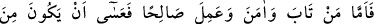

“İşte o gün onlara bütün haberler körleşmiştir (delilleri tükenmiş),”
Tefsir ehli der ki: Peygamberlere söylenmiş olan haberler onlardan gizli kalır, bir şey
bilmezler ya da karma karışık olur ve onları hidâyete ve doğru yola sevk edemez.
Cümlenin aslı “__WORD__ şeklinde olup onlar basîretleri gitmiş ve hayra bir yol
bulamamışlar, demektir. Burada bu, tersine çevrilmiş ve onların hâli olan körlük,
mubâlağa için haberlerin hâli yapılmıştır. “__WORD__ fiilinin “__WORD__ harfi cerri ile müteaddî
olması, fiilin “__WORD__ (gizlilik)” ve “__WORD__ (karışıklık)” mânâlarını da içermesi
sebebiyledir. Peygamberler -soru sorma âfetinden beri ve uzak olmakla beraber- bu
korkunç durumda ilmi, gaybları bilen Allah’a havâle ederler. Bir de ümmetlerin dalâlet
ehli olanlarını düşün, halleri nicedir?
Peygamberlerin bile dehşete kapıldığı yerde
Sen günahlarından nasıl özür dileyeceksin, gel bakalım
“Onlar” bu dehşet, şaşkınlık ve korkunç hâl karşısında veya hâlin ne olacağını kimse
bilmediği için, bu konuda herkesin eşit olduğu bilindiğinden “birbirlerine de” cevap
için artık bir soru “soramayacaklardır.”
67. Fakat tevbe eden, îman edip iyi işler yapan kimseye gelince, onun kurtuluşa
erenler arasında olması umulur.
Fakat” şirkten “tevbe eden, îman edip iyi işler” sâlih ameller “yapan kimseye
gelince, onun” Allah katında “kurtuluşa erenler,” matlûbuna kavuşanlar ve
kaçtıklarından da kurtulanlar “arasında olması umulur. Zira kurtuluş, Hz. Peygamberin
icâbetine bağlıdır.
Muhammed’in rızâsı olmaksızın nefes bile alma, yaşama
Kurtuluşun yolu işte ancak budur
Peygamberin aksine kim ki bir yol tutarsa
Gitmek istediği menziline asla ulaşmayacak
“__WORD__ (umulur)” ifâdesi, ehl-i kiramın âdetine göre tahkik ifâde eder. Yahud da tevbe
edenin tevbesinden önce ümid (teraccî) ifâde eder. Yâni tövbe edenin, kurtuluşun
gerçekleşmesi için ümitvar olmasını ifâde eder.
Keşfü’l-esrâr’da der ki: Buradaki “__WORD__ (umulur)” ifâdesi, o kişinin tövbeye ve sâlih